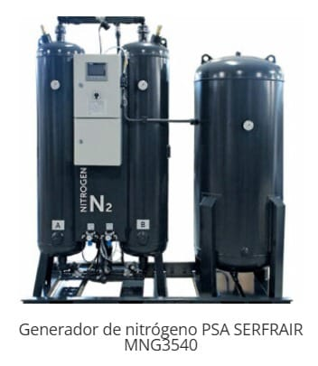

Generador de nitrógeno PSA SERFRAIR MNG3540
Nitrógeno PSA
Generador de nitrógeno por adsorción PSA. Produce nitrógeno de alta pureza in situ a partir de aire comprimido, ideal para industria alimentaria, láser y procesos de inertización. Elimina la dependencia del suministro en botellas.